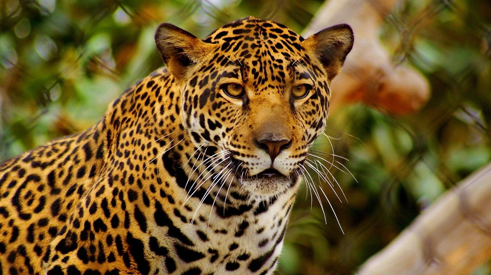

Contenedores relativos.
Contenedor relativo clase1
Contenedor Relativo clase1
La caza furtiva también constituye otro problema grave. Durante mucho tiempo, estos felinos han sido cazados por sus pieles, y en la actualidad, está creciendo el comercio internacional ilegal de dientes de jaguares y productos hechos con hueso de jaguar para enviar a China.
Contenedor relativo clase3
El jaguar es el único felino
grande de América y el tercero
más grande del mundo, después
de los tigres y los leones.
Son muy parecidos a los leopardos,
que viven en África y Asia,
pero las manchas de los
jaguares son más complejas
y suelen tener un punto en el centro.
A diferencia de muchos otros felinos, los jaguares no rechazan el agua. De hecho, son muy buenos nadadores. Cazan peces, tortugas e incluso caimanes, usando unas fauces increíblemente poderosas para perforar los cráneos de sus presas.
Contenedor Modal
Contenedor Modal
Contenedor Modal
Contenedor Modal
Contenedor Modal
Contenedor Modal
Contenedor Modal
Contenedor Modal
